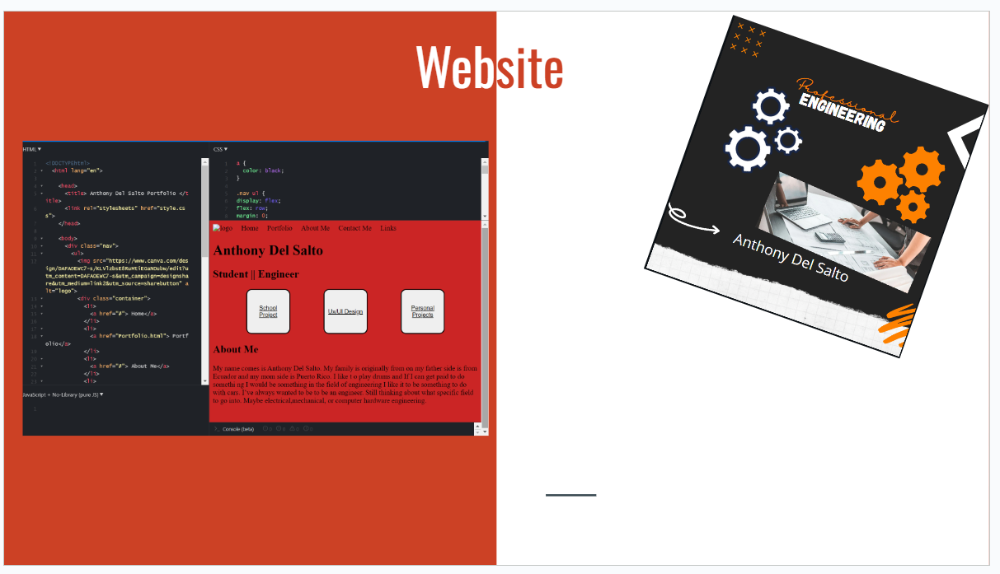
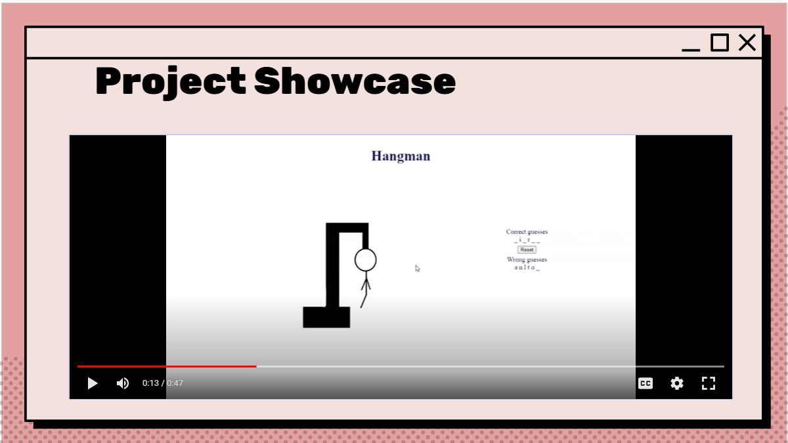

|  | This was the first website I created freshmen year with Project Innovate. This website was more of a copy and paste task then learning and showed me the power of programming then teaching me how to program. |
| This was my AP Computer Science Principles Create Task(p.s is doesn't work now ask to use it next year). This website showed off the skills I learn |  |
| For this year I chose something outside the box. While this website is I wanted to chose and is my project showcase I wanted to do a little more, something I created outside of school. My drums! The music in the background is attached using javascript. I hope this counts and I hope you enjoy. | |